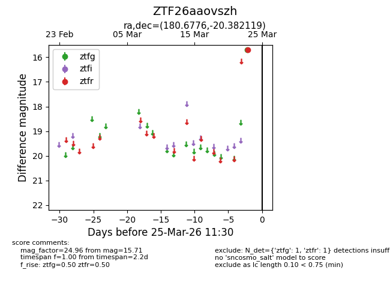
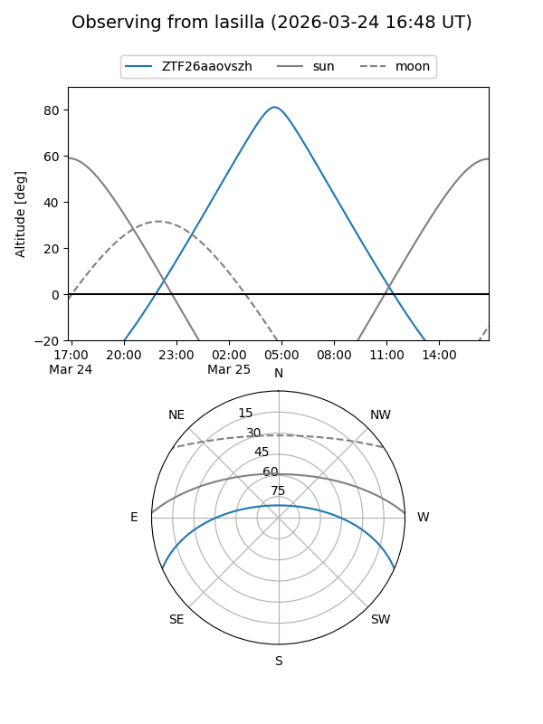
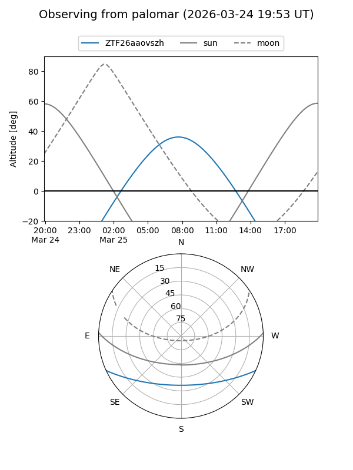

ZTF26aaovszh
Target ZTF26aaovszh at 2026-03-25 11:35
Aliases and brokers:
FINK: link
Lasair: link
ALeRCE: link
alt names
ZTF26aaovszh (ztf,fink_ztf)
Coordinates:
equatorial (ra, dec) = 180.6776,-20.38212
equatorial (HMS+DMS) = 12:02:42.62,-20:22:55.63
galactic (l, b) = (287.7266,+41.04650)
Flags:
Photometry:
last ztfg=15.70, ztfr=15.71
1 ztfg, 1 ztfr detections
Lightcurve

Visibility


Additional plots